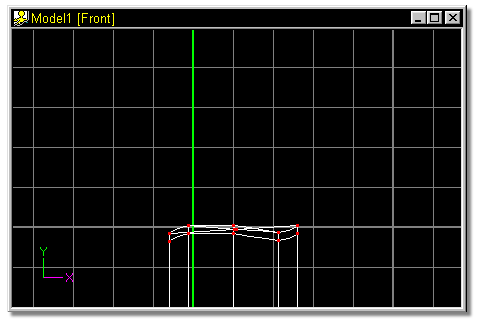
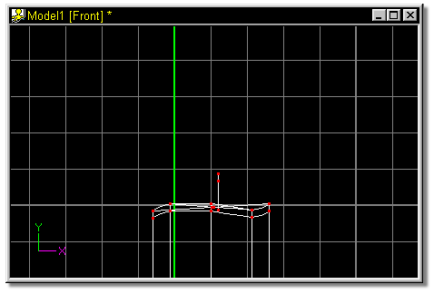
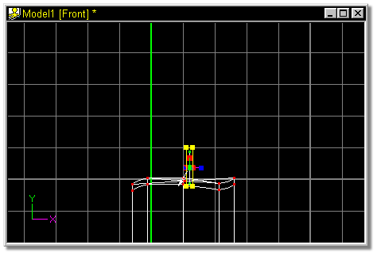

Next comes the wick.

Figure 32

Figure 33
Click one of the points along the spline that was just added and press the “/”
key to Group Connected. All three of the points on the spline should highlight
green to indicate that they are selected. Click the Scale Manipulator button.
Figure 34
Move the pivot of the selected group by clicking on it with the mouse, and
dragging it down and left, as indicated by the white arrow in figure 34a.

Figure 34a
 Click the Move button, click near the top of the candle and drag the mouse
down until your screen looks similar to figure 32.
Click the Move button, click near the top of the candle and drag the mouse
down until your screen looks similar to figure 32.
 Using the Add Lock tool, add three control points in a straight line,
similarly to figure 33.
Using the Add Lock tool, add three control points in a straight line,
similarly to figure 33.